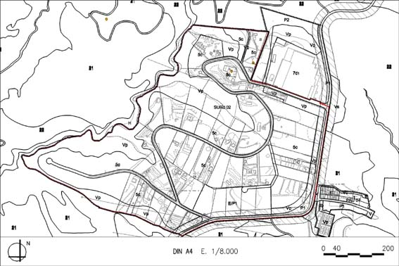

SURd 02 “Can Nicolau de Dalt” (Sól Urbanitzable delimitat SURd-02)

Objectiu: Urbanització del barri de Can Nicolau de Dalt, i obtenció dels terrenys destinats per a equipaments i espais lliures.
Règim del sòl: Sòl urbanitzable delimitat (SURd)
| Superfície del polígon: Ordenació(plànol vinculant) Sistemes urbanístics de cessió: Viari (V) Espais lliures (P1) Equipaments (E)/(P1) Zones edificables: Residencial aïllada unihabitatge parcel·la gran (clau 5c) Verd privat (Vp) |
387.730 m2s 27.605 m2s 6.300 m2s 22.408 m2s 232.810 m2s 98.607 m2s |
C.E.B.: (St) Sostre total (SH) Sostre per habitatges Nombre màxim d’habitatges: Règim HPO : (10’52% SH) Règim HRLL: (89’48% SH) |
0,0774 m2st/m2s 30.000 m2st 30.000 m2st 120 hab. 3.157m²st. 26.843 m²st |